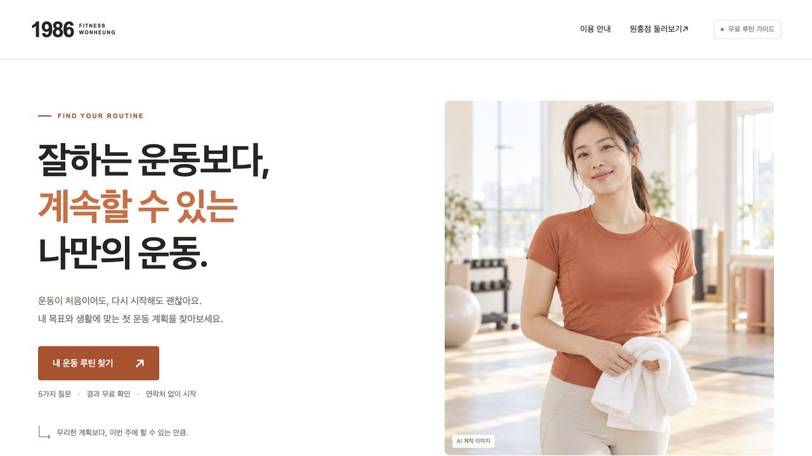
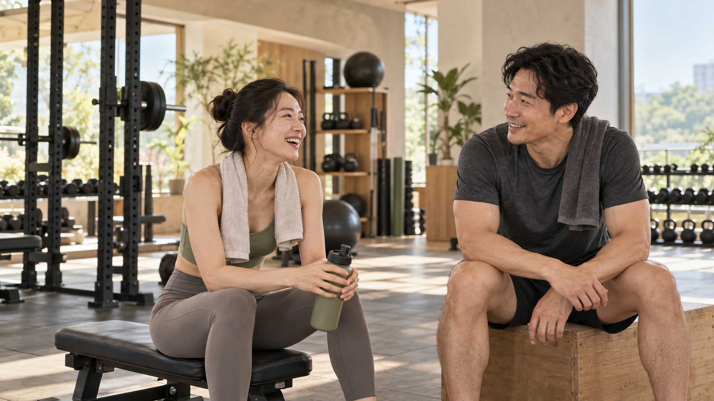
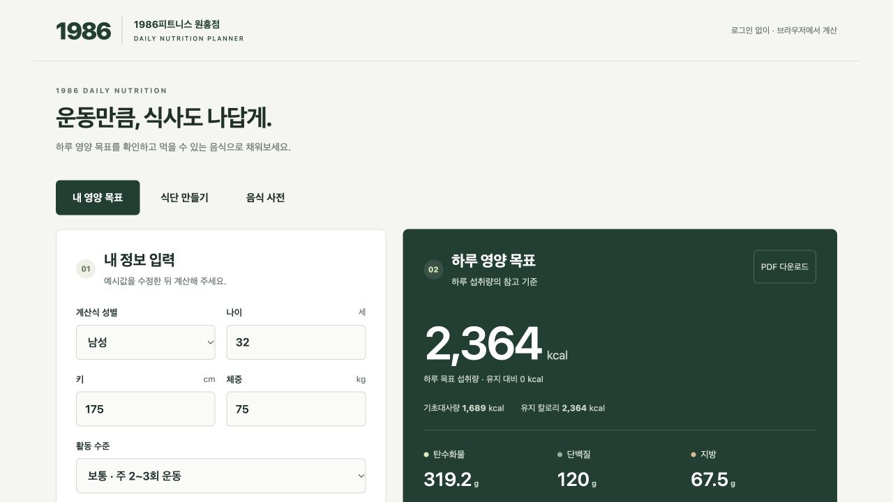
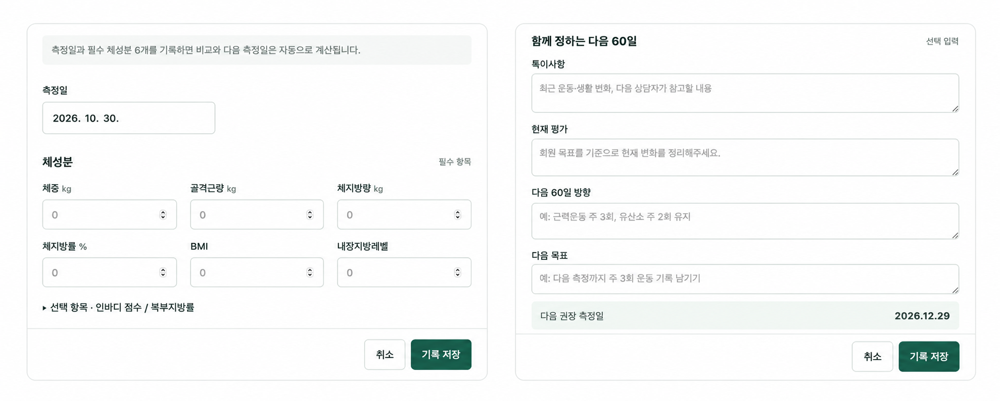
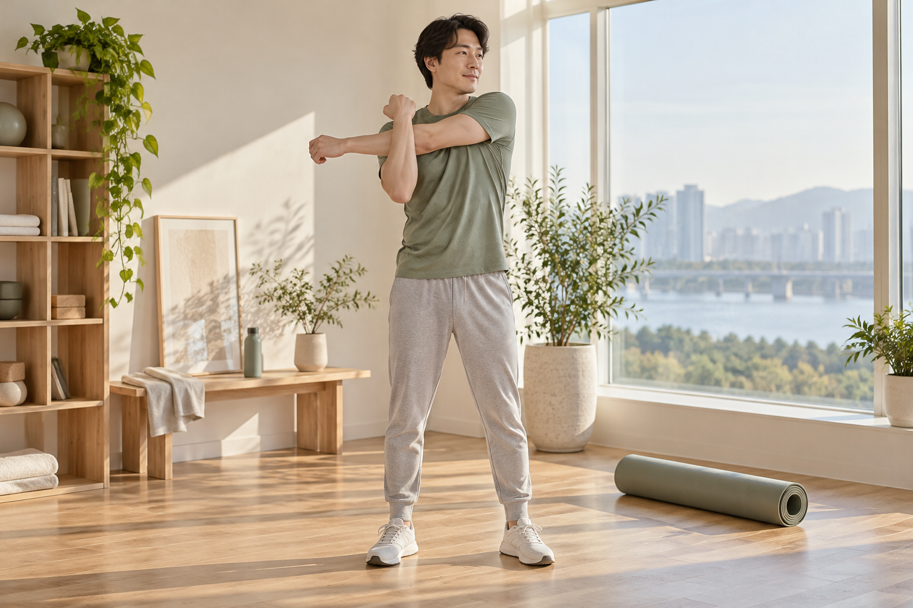

PLAN나만의 운동 루틴 · 실제 서비스 화면
오늘 할 운동이 분명해지도록.
운동 목표와 경험, 가능한 시간을 바탕으로 개인운동의 시작 계획을 이해합니다.
나만의 운동 루틴

상담 시작 · 나에게 맞는 이용 방법
함께 보며 골라주세요. 여러 개 선택할 수 있습니다.
회원권 안내 · 직접 활용하는 관리 도구
운동할 때 꺼내 보는 루틴, 식사를 정리할 기준,
다음 목표를 세울 기록을 활용합니다.
이용 방법과 측정 일정은 직원이 안내합니다.
운동 목표와 경험, 가능한 시간을 바탕으로 개인운동의 시작 계획을 이해합니다.
나만의 운동 루틴
열량과 영양소를 살펴보고, 일상에서 실천할 수 있는 식사 구성을 알아봅니다.
식단 계산기
약 60일 주기로 체성분 변화를 확인하고, 다음 운동 목표를 함께 점검합니다.
1986 : 60 DAYS
도구는 일반적인 참고 안내이며 개별 운동·영양 처방이 아닙니다. 참여 방법과 측정 가능 일정은 상담 시 확인해 주세요.
등록 후 · 기록과 점검
60 DAYS는 체중 숫자만으로 판단하지 않습니다.
이전 기록을 돌아보고, 다음 목표를 정하는 시간입니다.
DAY 1
첫 체성분 측정과
운동 목표 확인
DAY 60
이전 기록과 비교하고
운동 방향 점검
DAY 120→
누적 변화를 돌아보고
다음 운동 목표 설정
약 60일 간격의 운영 예시입니다. 실제 일정은 센터와 조율하며, 특정 신체 변화를 보장하지 않습니다.
START WITH YOUR MEMBERSHIP
회원권만으로 시작할지, 직접 배우는 PT 교육을 더할지.
설명을 들으신 뒤 지금 필요한 범위를 선택하시면 됩니다.
선택 안내 · 별도 등록하는 PT 5회
트레이너와 배우고, 직접 해보고, 나의 계획으로 정리합니다.
수업을 듣는 시간을 넘어 개인운동에 활용할 수 있도록.
목표와 운동 경험을 듣고, 기본 움직임과 현재 수행 수준을 확인합니다.
남기는 것 · 나의 출발점과 운동 목표기구를 내 몸에 맞게 조절하고, 편안한 범위에서 기본 동작을 실습합니다.
남기는 것 · 기구 설정과 동작 체크 포인트목표와 일정에 맞는 순서를 정하고, 트레이너와 함께 한 번의 운동을 진행합니다.
남기는 것 · 운동 순서와 개인별 실습 메모개인운동에서 어려웠던 점을 점검하고, 식사 도구로 일반적인 식사 구성을 이해합니다.
남기는 것 · 수정할 동작과 실천할 생활습관배운 동작을 다시 확인하고, 앞으로 혼자 실천할 운동 일정과 점검할 목표를 정합니다.
남기는 것 · 나의 개인운동 계획개인 수준에 따라 교육 내용과 진행 순서를 조정합니다.
5회는 단기간의 체성분 변화나 운동 숙련을 보장하는 과정이 아닙니다.
CHOOSE YOUR WAY
스스로 활용할 운동·식사 도구와
정기적인 변화 확인을 중심으로.
같은 기반 위에 트레이너의
개별 평가와 직접적인 지도를 더해.
60 DAYS 참여를 위해 PT를 구매할 필요는 없습니다. PT는 별도 상담과 등록을 통해 이용합니다.
04 / WELLNESS NOTES
웰니스, 근력, 식사와 회복, 변화 기록.
5회 수업 구성과 별도로 살펴보는 생활·운동 교육 주제입니다.
LESSON 01 / 웰니스의 중요성
UNDERSTAND YOUR WELLNESS
운동·식사·수면·회복을
함께 돌아보는 시간입니다.

이번 주 실천할 생활습관 한 가지
배우고, 이렇게 실천해요
이 과정에서 웰니스는 운동, 식사, 수면과 회복을 함께 살피는 생활 관리입니다. 숫자 하나보다 내 몸의 기능과 일상의 지속 가능성을 살펴봅니다.
운동 경험과 생활 패턴에 맞춰 실천 범위를 정합니다. 건강 상태의 진단이나 치료를 위한 과정은 아닙니다.
생활·운동 교육 안내입니다. 별도 수업 제공 여부와 운영 일정은 센터에서 안내합니다. 약물 사용을 권유하거나 처방·용량 조절을 안내하지 않습니다.
근력운동·영양·생활 관리에 관한 설명은 2025년 4개 전문학회 공동 권고문을 참고했습니다. 일반적인 교육이며 개인별 치료 지침이 아닙니다.
GLP-1 치료를 지원하는 영양·생활 관리 공동 권고문 ↗NIDDK · 체중 관리 약물과 생활습관 안내 ↗궁금한 점을 모았어요
운동 경험이 없어도 회원권 상담을 받을 수 있습니다. 직원과 운동 목적과 이용 방법부터 살펴봅니다. 직접적인 기구 사용법과 개별 동작 지도가 필요하면 직원에게 필요한 도움을 말씀해 주세요.
회원권 관리와 PT 교육은 구분됩니다. 운동·식사 도구와 60 DAYS 참여 안내는 회원권 관리 경험이고, PT는 개별 평가와 직접 지도가 필요한 경우 선택하는 서비스입니다.
목표와 기초 체력 확인, 기초 움직임과 기구 사용, 개인운동 루틴 실습, 식사와 수행 점검, 독립 운동 계획 정리로 구성합니다. 단기간의 체성분 변화보다 혼자 운동하는 이해와 실습을 중심으로 합니다.
원흥점 상담에서 현재 회원권과 PT 5회 상품의 가격, 이용 조건과 가능한 일정을 확인해 주세요. 회원권 관리와 개별 PT 교육의 제공 범위를 구분해 안내합니다.
추가 PT 등록은 선택입니다. 교육 후 개인운동을 이어가거나, 더 배우고 싶은 내용이 있으면 추가 지도를 상담할 수 있습니다.
의료 서비스가 아닙니다. 운동 루틴과 식단 계산은 일반적인 참고 도구이며 개별 진료·처방을 대신하지 않습니다. 건강 상태에 따른 운동 제한이나 전문적인 영양 관리가 필요한 경우 담당 의료진과 먼저 확인해 주세요.
TODAY’S CONSULTATION
운동 목표와 이용 방법을 확인하고, 무리 없이 시작할 다음 단계를 정합니다.
실제 상품과 이용 조건을 안내받은 항목에 체크해 주세요.
확인한 항목 0개 · 체크는 등록이나 결제를 진행하지 않습니다.
선택과 체크는 현재 화면에서만 유지되며 저장·전송되지 않습니다. 다음 상담 전 초기화해 주세요. 등록과 결제, 일정 확정은 직원이 센터 절차로 안내합니다.